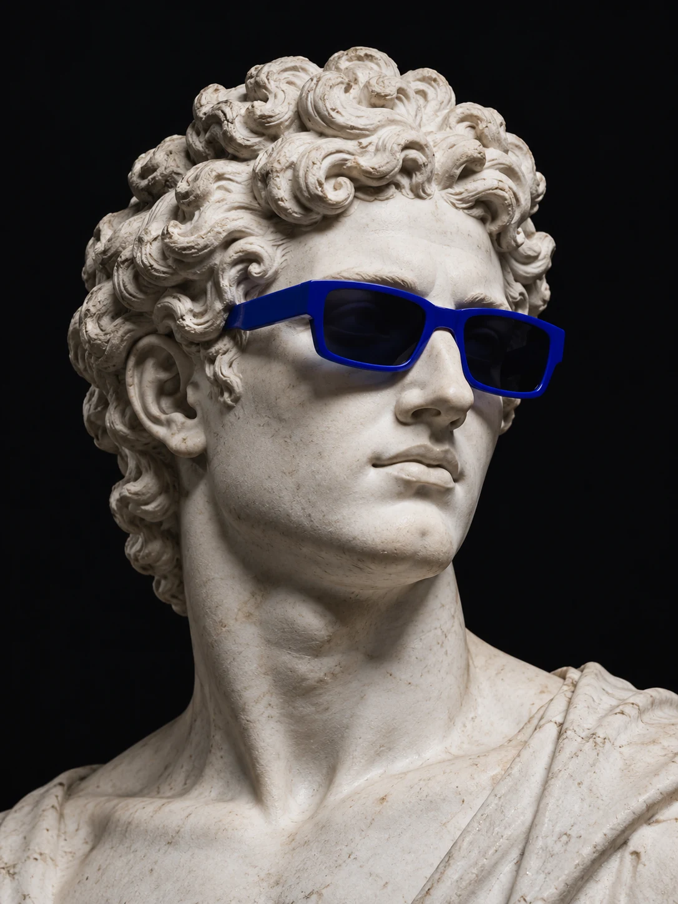

лет в HR и People & Culture
IT, digital, e-commerce: от найма и адаптации до внутренних коммуникаций и ивентов.
HR Strategy Partner · People & Culture
HR Strategy Partner с опытом 9+ лет в IT, digital и e-commerce. Строю HR-функцию и корпоративную культуру: стратегия, оргдизайн, внутренние коммуникации, ивенты и HR-tech инструменты — от выездных корпоративов до ботов в мессенджерах.

Человечный подход. Измеримый результат.
Бизнес и опыт
IT, digital, e-commerce: от найма и адаптации до внутренних коммуникаций и ивентов.
слушают плейлист компании — культура работает на бренд работодателя ещё до оффера.
с 25% на старте: внутренний сервис стал привычкой команды.
крупнейший корпоратив: логистика, сценарий, площадка.
Каждый формат запускается с целью и сигналом обратной связи; выводы возвращаются в следующий цикл.
анонимные и с подписью — за один день.
кампания Waistline × «РЭЙ».
Одновременная координация до 47 подрядчиков без потери фокуса и срывов дедлайнов. Хеджирую риски так, чтобы каждое событие работало как инвестиция в eNPS, превращая ивенты в предсказуемые ритуалы.
Подход
Хороший ивент — это не «праздник», а управляемый инструмент: у него есть цель, аудитория, бюджет и измеримый результат.
Выясняю, какую задачу решает команда: адаптация, сплочение, прозрачность, бренд работодателя. Формат выбираю под цель, а не наоборот.
Сценарий, бюджет, подрядчики, риски и коммуникационный план. Продумываю путь участника от анонса до обратной связи.
Беру на себя детали: логистику, площадки, гест-менеджмент, координацию на месте и цифровые инструменты для распределённых команд.
Собираю обратную связь, смотрю на участие, eNPS и качественные сигналы. Выводы возвращаются в следующий цикл.
Живые моменты
За каждым безупречным ивентом стоит сценарий, а в кадре остаются эмоции.
Ивент — это сценарий, в котором есть место живому.People & Culture
Кейсы
HR-решения для бизнеса
Интерактивные модели решений о команде, бюджете и удержании. Выбери сценарий и посмотри, как меняются показатели.